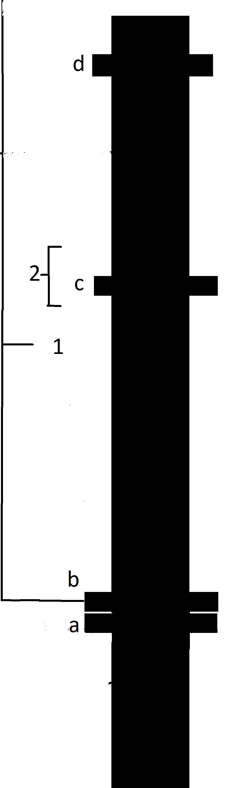

<!DOCTYPE html>
<html lang="de ">

<head>
    <title>Antike</title>
    <meta charset="utf-8">
    <!-- <script src="scripts/common.js"></script>  -->
    <link rel="stylesheet" type="text/css" href="styles/main.css">
    <link rel="stylesheet" type="text/css" href="styles/antiquity.css">
</head>

<body class="font-size">   
    <aside class="a">
    <h1>Orakel in der Antike</h1>

    <li>Im 6. Jh. v. Chr. von Etruskern geschaffen</li>
    <li>Ab ca. 520 v. Chr. Wohnort der Sybille von Cumae</li>
    <li>Nach 5. Jh. n. Chr. keinerlei Bedeutung</li>

    <a href="5_modern.html">Weiter</a>
    </aside>
    <aside class="b">
        
    </aside>
</body>

</html>